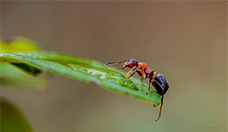
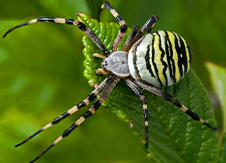
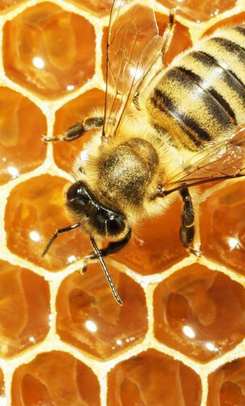
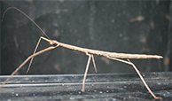

Ископаемые находки говорят, что членистоногие обитают на Земле по меньшей мере 320 млн. лет, они появились раньше динозавров. Эти удивительные Создания разнообразные по внешнему виду и размерам, они обитают повсюду - от джунглей и пустынь до наших домов и садов. Кто же они такие? |
||
|  | Кто такие насекомые ?Насекомые относятся к членистоногим - одному из типов беспозвончных животных, которые обладают членистыми конечностями. Скелет у них внешний: он находится снаружи тела, защищая внутренние органы от повреждений и высыхания, мышцы крепятся к нему изнутри. Тел онасекомых состоит из трёх частей: головы, груди и брюшка. На голове есть антенны, к груди крепятся три пары ног и (у большинства насекомых) две пары крыльев. Насекомые - одни из самых широко распространённых и многочисленных животных на Земле. Сушествуют миллионы их видов, и они живут практически повсюду. |
|
Кто такие паукообразные ?Паукообразные - тоже членистоногие животные. Уних четыре пары ног, а тело состоит из двух отделов - головогруди (слившихся головы и груди) и брюшка. На голове у них есть похожие на клыки челюсти (хелицеры) и ногощупалца (педипальпы), которыми они удерживают свою добычу. |
 | |
Растут ли насекомые ?Жесткий внешний скелет не может растягиваться, поэтому время от временинасекомое сбрасываетстарую оболочку и обзаводится новой (этот процесс называется линькой). Пока новый покров не затвердел, у насекомого есть возможность подрасти. Однако, став взрослым, насекомое перестаёт расти. |
Сколько живёт насекомое ?Время жизни поденки короче одного дня; некоторые бабочки живут несколько дней. Многие насекомые завершают свой жизненный цикл за год. Они спариваются, откладывают яйца и погибают. Однако существуют и исклбчения: например, царица термитов может прожить 50 лет. |
|
Впадают ли они в спячку ?Посколько насекомые холоднокровные животные, они предпочитают тёплый климат и имеют множество приспособлений для переживания холодов. Зимой некоторые из них впадают в спячку (анабиоз), при этом все жизненные процессы в их теле замедляются. Некоторые насекомые могу вырабатывать в своём теле глицерин. Это вещество действует, как антифриз, не давая замёрзнуть жидкости внутри их тела. Рой медоносных пчёл зимуетв ульях. Они согревают друг друга теплом, выделяющимся при вибрации их мышц. |
 | |
ФАКТЫСамые длинные насекомые в мире - палочники. Африканский палочник может достигать в длину 40 см.  |
||
| Содержание | Клопы - кто они? | |